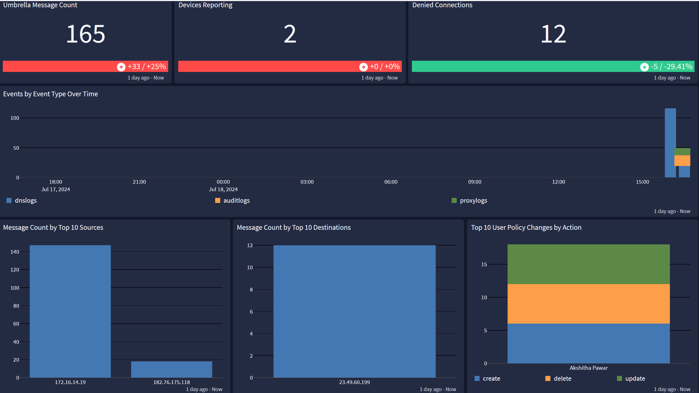
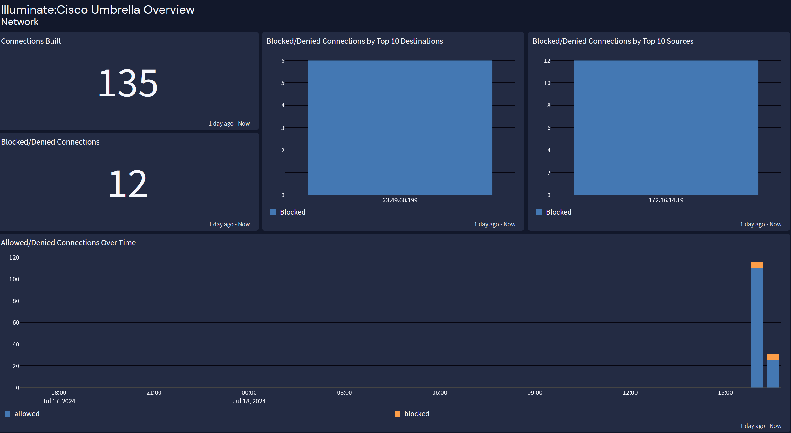
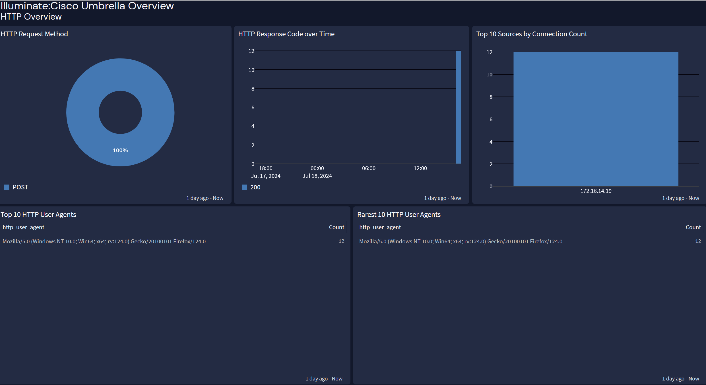

Cisco Umbrella is part of the Cisco Secure Client (formerly AnyConnect). It integrates with the Secure Client to provide comprehensive security by combining VPN capabilities with DNS-layer protection, web security, and cloud-delivered firewall features.
This technology pack will process Cisco Umbrella logs, providing normalization and enrichment of those events.
This technology pack includes one stream:
This technology pack includes one index set definition:
"2017-10-02 23:52:53","TheComputerName","192.192.192.135","1.1.1.91", "3.4.5.6","","ALLOWED","http://google.com/the.js","www.google.com","Mozilla/5.0 (Macintosh; Intel Mac OS X 10_11_6) AppleWebKit/537.36 (KHTML, like Gecko) Chrome/61.0.3163.100 Safari/537.36","200","562","1489","","","Search Engines","","","","","","Roaming Computer","","TheComputerName, ADSite,Network","Roaming Computer, Site, Network","GET","","","the.js","","","","isolated","downloaded_original_file","warn-session","",""
"2015-01-16 17:48:41","ActiveDirectoryUserName", "ActiveDirectoryUserName,ADSite,Network", "10.10.1.100","24.123.132.133","Allowed","1 (A)", "NOERROR","domain-visited.com.", "Photo Sharing","AD User","AD User,Site,Network",""
"","2021-07-22 10:46:45","user@domain.com","", "logexportconfigurations", "update","209.165.200.227","version: 4","version: 5"
The Cisco Umbrella content pack supports parsing, normalization, and categorization for the events listed above.
Cisco Umbrella offers a dashboard with three tabs: an overview tab, a network tab, and a tab for an overview of HTTP events.


